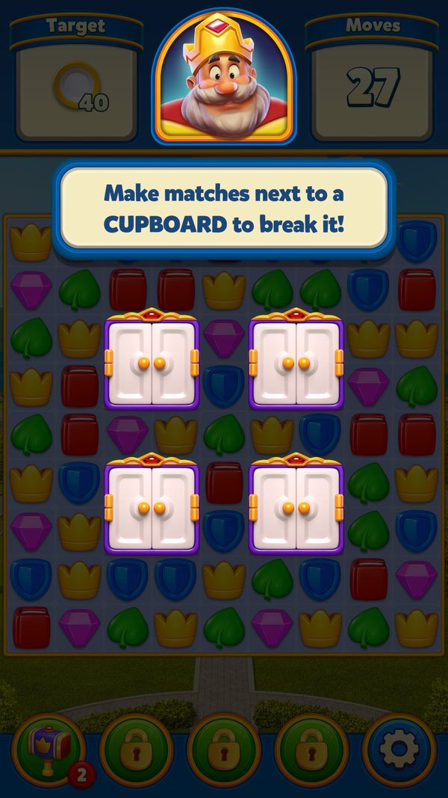
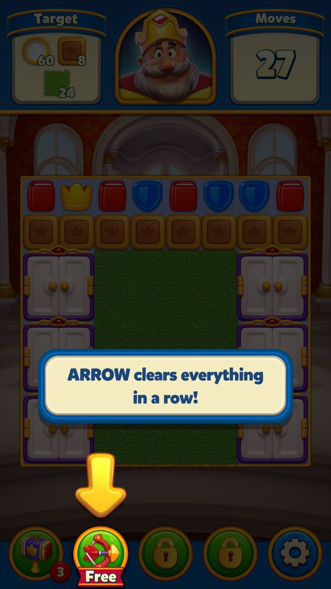
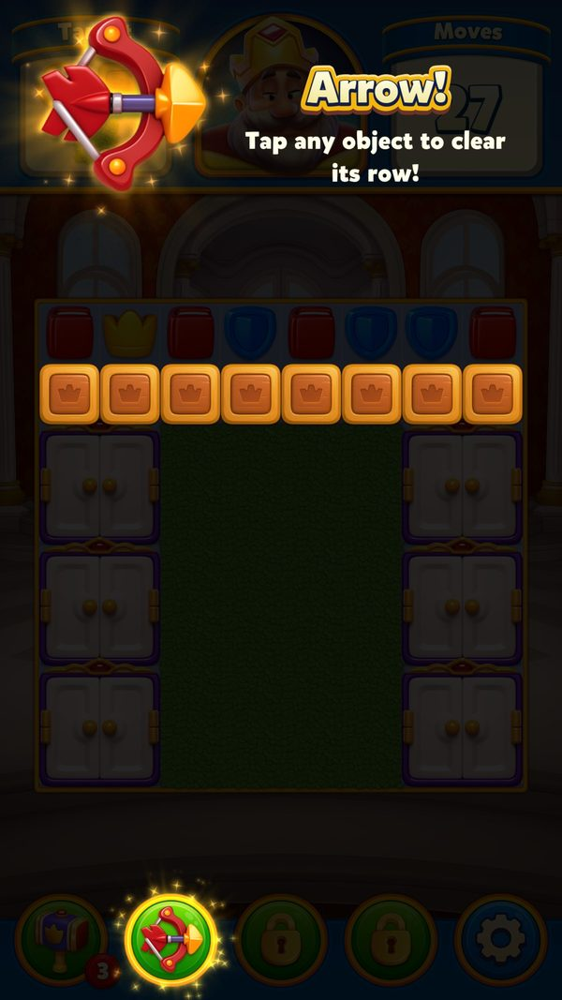
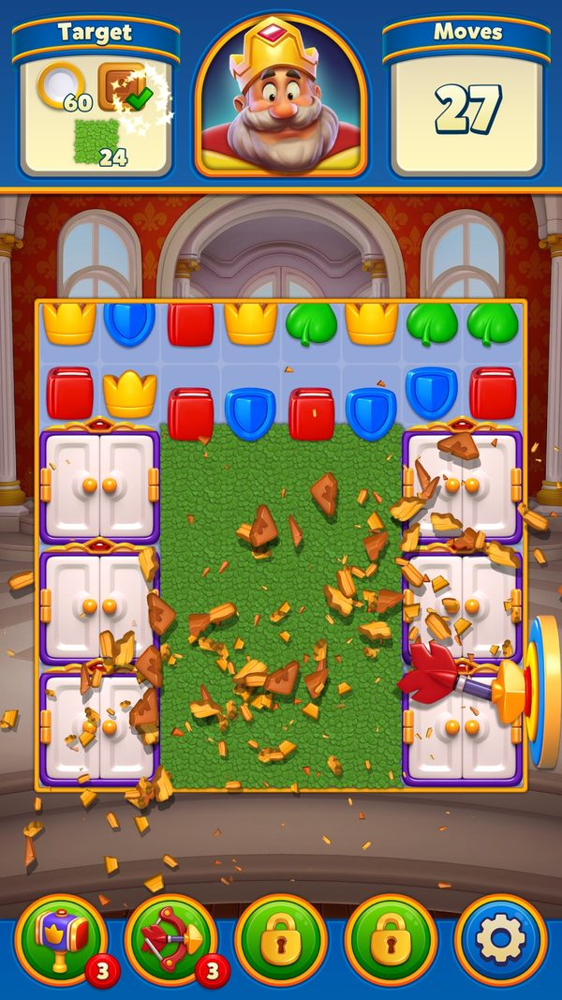
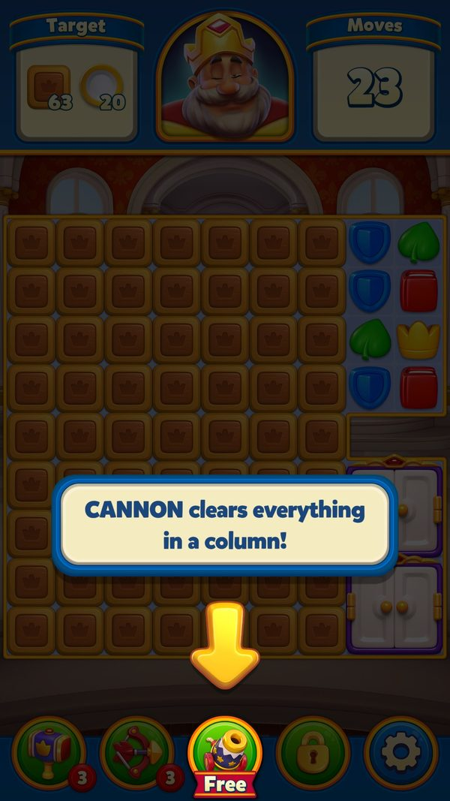
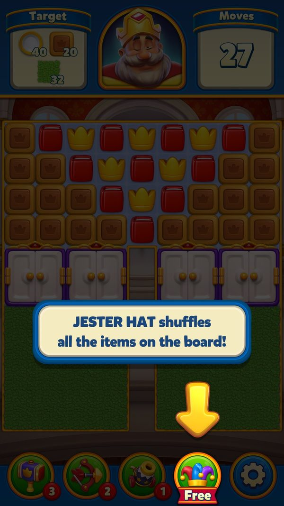

Hướng dẫn & Người chơi mới (Onboarding & Tutorial)
Hệ thống 4 lớp dạy người chơi cách chơi: tutorial cố định theo level, tutorial động khi lúng túng, tutorial tính năng ở Prelevel và theo dõi hành vi người mới.
Mô tả
- Onboarding là hệ thống hướng dẫn nhiều lớp của Royal Match, dạy người chơi từ nước đi đầu tiên đến các cơ chế và sự kiện phức tạp ở level cao.
- Lớp thứ nhất là tutorial cố định gắn cứng với số level: 111 kịch bản riêng cho từng level, từ level 4 tới level 14401, mỗi kịch bản mô tả từng bước phải làm.
- Trong lúc tutorial chạy, game khóa thao tác và chặn các ô không đúng ý đồ nên người chơi không thể làm sai bước.
- Lớp thứ hai là tutorial động: khi người chơi để màn hình một lúc không thao tác hoặc gặp cơ chế lạ, game tự bật gợi ý (11 tình huống, ví dụ vật phẩm đặc biệt, combo, cục băng, hòm cổ).
- Lớp thứ ba nằm ở màn Prelevel và Home: 12 tính năng mới (booster, Cloche, Super Duke, Magic Duke, token nhân điểm...) đều được giới thiệu đúng một lần khi vừa mở khóa.
- Lớp thứ tư âm thầm đếm hành vi người mới - số lần chạm vật phẩm đặc biệt, số lần chạm TNT/Rocket, số combo đã dùng - để quyết định có cần bật tutorial động hay không.
- Bốn level dạy booster nằm ở level 8 (Hammer), 14 (Arrow), 17 (Cannon), 19 (Jester Hat), mỗi lần kèm booster miễn phí để thử ngay (nguồn không ghi số lượng).
- Ở level 11 game tự mở dialog Area để giới thiệu vòng lặp meta trang trí lâu đài.
- Mỗi sự kiện lớn có tutorial riêng; một bảng ưu tiên (25 sự kiện) điều phối thứ tự để người chơi level cao không bị ngập tutorial cùng lúc.
- Tutorial đang dở được khôi phục khi mở lại app giữa chừng, nên người chơi không phải xem lại từ đầu.
Lưu ý
Ảnh chụp màn hình (6)
Chụp trực tiếp từ game đang chạy: 2026-10-06 · LDPlayer 9 · Android 9 · 1080×1920 · Royal Match v38174 · tài khoản test 2712389101 (tên sdasfdfsdf), level 11. Bấm ảnh để phóng to, dùng phím ← → để chuyển ảnh.












Mở khóa & điểm vào
Tutorial level cố định gắn với số level cụ thể (LevelTutorial<n>). Booster tutorial: HammerBoosterTutorialLevel = 8, ArrowBoosterTutorialLevel = 14, CannonBoosterTutorialLevel = 17, JesterHatBoosterTutorialLevel = 19. HomeTutorialManager.AutoShowAreaDialogLevel = 11 (tự động mở dialog Area). Tutorial động bị giới hạn bởi NewUserDefaultUxConfig (specialItemTapTutorialMinLevel/MaxLevel, comboTutorialMinLevel/MaxLevel). Toàn bộ trạng thái tutorial lưu trong long 'NewUserNewUx' và bitmask UserInventory.Dialogs.
Điểm vào:
- Vào level có tutorial cố định (LevelTutorialManager.PrepareTutorial)
- Trong level khi người chơi không thao tác (DynamicLevelTutorialManager.ManualUpdate)
- Màn Prelevel khi mở tính năng mới (HomeTutorialManager.ShowPrelevelTutorialIfNeeded)
- Home sau khi thắng level, nhận booster vừa mở khóa (TryAddBoosterTutorialActions)
- Dialog King's Nightmare (ShowKingNightmareEventsTutorial)
- Dialog mua multiplier token (ShowMultiplierTokenPurchaseTutorial)
- Các tutorial riêng của từng sự kiện (IFeatureHaveSkippableTutorial - xem từng tab sự kiện)
Cách hoạt động
- Người chơi vào một level; hệ thống kiểm tra level đó có tutorial cố định không và tạo đúng lớp kịch bản tương ứng (LevelTutorialManager.PrepareTutorial → CreateTutorialForLevel, 111 lớp LevelTutorial<n> từ 4 đến 14401), đồng thời tra danh sách level có tutorial episodeTutorialLevelList (HasEpisodeTutorialAt).
- Nếu là 1 trong 4 level dạy booster (8 Hammer, 14 Arrow, 17 Cannon, 19 Jester Hat), game bật thêm InGameBoosterTutorial và cấp booster miễn phí để thử (IsBoosterTutorialLevel, FreeBoosterUse).
- Tutorial chạy dạng coroutine từng bước: chuẩn bị (BeforeTutorialStarted) → khóa cảm ứng, log 'Touch Disabled for {0}' (DisableTouchForTutorial) → chờ người chơi làm đúng.
- Các ô ngoài kịch bản bị chặn để người chơi không đi sai (DisableImpossibleMoveForCell / IsImpossibleMoveDisabledForCell, HashSet<CellPoint> impossibleMoveDisabledCells); HintManager bị tắt trong lúc này.
- Người chơi làm đúng → bước hoàn tất, mở lại cảm ứng, log 'Touch Enabled for {0}' (StepCompleted → EnableTouchForTutorial); hết các bước thì phát sự kiện kết thúc (TutorialComplete).
- Song song, hệ thống đếm hành vi người mới trong suốt level: số lần chạm vật phẩm đặc biệt, số lần chạm TNT/Rocket, số combo đã dùng (NewUserNewUxHelper.OnSpecialItemTapped / OnTntOrRocketItemTapped / OnComboUsed → NewUserNewUxLocalData, key 'NewUserNewLevelLocalData').
- Nếu người chơi ngừng thao tác, bộ đếm khung hình chạy (DynamicLevelTutorialManager.ManualUpdate, hasNoOperationSinceFrame) và một trong 11 creator tutorial động được kích hoạt (InitTutorials → ADynamicTutorialCreator).
- Trước khi hiện, game đối chiếu bộ đếm hành vi với cấu hình 9 tham số (ShouldTryShowSpecialItemTapTutorialInGame / ShouldTryShowComboTutorialInGame / ShouldTryShowSpecialItemTapHintInGame so với NewUserDefaultUxConfig) - đúng khoảng level và chưa dùng đủ số lần thì mới hiện (LevelTutorialManager.ShowDynamicTutorial).
- Sau khi hiện, game đánh dấu đã xem để không lặp lại (OnComboTutorialSeen / OnSpecialItemTapTutorialSeen, SetHasShownTutorialInLevel, tối đa 1 tutorial vật phẩm mỗi level) và bắn analytics key 'DynamicTutorial'.
- Nếu người chơi thoát app giữa level, trạng thái tutorial được khôi phục khi quay lại (LevelTutorialManager / DynamicLevelTutorialManager / NewUserNewUxHelper.RestoreFromSaveData qua LevelRestoreManager.Current và LevelSaveManager.Current).
- Thắng level → về Home, hệ thống đẩy các hành động tutorial vào hàng đợi (HomeTutorialManager.TryAddTutorialActions(levelWin)); ở level 11 nó tự mở dialog Area để giới thiệu trang trí lâu đài (AutoShowAreaDialogLevel = 11).
- Nếu vừa mở khóa một booster, Home nhắc người chơi nhận (TryAddBoosterTutorialActions, lưu 'LastClaimedUnlockedBooster'; trao qua ClaimUnlockedBooster(boosterType)).
- Khi mở màn Prelevel mà có tính năng mới, game chọn tính năng cần giới thiệu trong 12 loại PrelevelFeatureType (TrySetPrelevelFeatureTutorial, lưu 'PrelevelBoosterTutorialShowed', đếm 'LevelTryCount') rồi hiện đúng tutorial tương ứng (ShowPrelevelTutorialIfNeeded).
- Giao diện tutorial ở Home dựng từ 4 thành phần nạp sẵn: lớp đen chặn thao tác, mũi tên chỉ, bong thoại và mask khoét lỗ làm nổi bật phần tử (LoadAssets 'HomeTutorialViewAssets' → CreateBlack / CreateArrow / CreateDialog / HomeTutorialMaskView), kèm animation bàn tay (HandAnimationType).
- Với sự kiện, mỗi sự kiện có tutorial riêng và có thể bị bỏ qua hàng loạt (IFeatureHaveSkippableTutorial.CompleteTutorials); thứ tự hiện do bảng ưu tiên 25 mức điều phối (EventTutorialPriority, EventsReactivationManager.TryStartEventReactivationFlow).
- Toàn bộ tiến độ tutorial được nén vào long 'NewUserNewUx' (UpdateData log 'UpdateNewUserNewUx: {0}') và bitmask UserInventory.Dialogs, rồi đồng bộ lên server (Progress sync, UserInventory.UpdateDialogs).
Luồng chi tiết theo code
1) Vào level: LevelTutorialManager.PrepareTutorial(levelStartOrigin) log 'Preparing tutorial {0} - Current Step: {1}'; CreateTutorialForLevel(level) tạo đúng lớp LevelTutorial<level> (111 lớp, vd LevelTutorial4 cho level 4, LevelTutorial14401 cho level 14401); HasEpisodeTutorialAt(level) tra cứu episodeTutorialLevelList; IsBoosterTutorialLevel(activeLevelNumber) kiểm tra 4 level booster (8, 14, 17, 19); GetLeagueLevelTutorial() cho level League. 2) RunTutorial(tutorial) (coroutine, tutorialRoutine) chạy từng bước: BeforeTutorialStarted() -> DisableTouchForTutorial() log 'Touch Disabled for {0}' -> người chơi thao tác -> StepCompleted() -> EnableTouchForTutorial() log 'Touch Enabled for {0}' -> TutorialComplete() phát onComplete. DisableImpossibleMoveForCell(point) / IsImpossibleMoveDisabledForCell(point) chặn nước đi không đúng ý đồ tutorial (impossibleMoveDisabledCells). 3) Tutorial động: DynamicLevelTutorialManager.ManualUpdate() đếm hasNoOperationSinceFrame; khi người chơi không thao tác hoặc gặp cơ chế mới thì một trong 11 ADynamicTutorialCreator tạo tutorial (DynamicSpecialItemTapTutorialCreator, DynamicComboTutorialCreator, DynamicIceCubeCollectTutorialCreator, DynamicCoilItemTutorialCreator, DynamicAncientVaultTutorialCreator, DynamicSuperDukeTutorialCreator, DynamicMagicDukeTutorialCreator, DynamicClashOfChampionsScoreTutorialCreator, DynamicClashOfChampionsLockedTutorialCreator, DynamicMagicLanternItemTutorialCreator, DynamicColorMixerTutorialCreator); LevelTutorialManager.ShowDynamicTutorial(dynamicTutorial) hiện. Mỗi loại chỉ tạo một lần (superDukeTutorialCreated, magicDukeTutorialCreated, clashOfChampionsScoreTutorialCreated, clashOfChampionsLockedTutorialCreated, magicLanternItemTutorialCreated). Analytics key 'DynamicTutorial' (EvtKey). 4) NewUserNewUxHelper theo dõi: OnSpecialItemTapped() / OnTntOrRocketItemTapped() / OnComboUsed() ghi vào NewUserNewUxLocalData{isSpecialItemUsed, shouldSeeComboTutorial, comboUseCount, specialItemTapCount, tntRocketTapCount} (key 'NewUserNewLevelLocalData'); ShouldTryShowSpecialItemTapTutorialInGame() / ShouldTryShowComboTutorialInGame() / ShouldTryShowSpecialItemTapHintInGame() quyết định dựa trên NewUserDefaultUxConfig. UpdateData(newUserNewUxData) log 'UpdateNewUserNewUx: {0}' lưu long 'NewUserNewUx'. 5) HomeTutorialManager.TryAddTutorialActions(levelWin) đẩy tutorial vào flow; TrySetPrelevelFeatureTutorial(PrelevelFeatureType) chọn tính năng cần giới thiệu (lưu 'PrelevelBoosterTutorialShowed', đếm 'LevelTryCount'); ShowPrelevelTutorialIfNeeded(prelevelDialog) hiện. TryAddBoosterTutorialActions() nhắc nhận booster vừa mở (lưu 'LastClaimedUnlockedBooster'); ClaimUnlockedBooster(boosterType) (static) trao booster.
Phần thưởng
PHẦN THƯỞNG TUTORIAL BOOSTER
| Mốc | Điều kiện | Phần thưởng |
|---|---|---|
| Level 8 - Hammer | Vào level 8 (HammerBoosterTutorialLevel = 8) | H (miễn phí để thử số lượng không có trong nguồn) |
| Level 14 - Arrow | Vào level 14 (ArrowBoosterTutorialLevel = 14) | A (miễn phí để thử số lượng không có trong nguồn) |
| Level 17 - Cannon | Vào level 17 (CannonBoosterTutorialLevel = 17) | Ca (miễn phí để thử số lượng không có trong nguồn) |
| Level 19 - Jester Hat | Vào level 19 (JesterHatBoosterTutorialLevel = 19) | J (miễn phí để thử số lượng không có trong nguồn) |
| Nhận booster vừa mở khóa ở Home | Thắng level mở khóa booster, Home nhắc nhận (TryAddBoosterTutorialActions, lưu 'LastClaimedUnlockedBooster') | Booster vừa mở khóa: H / A / Ca / J (số lượng không có trong nguồn) |
MỐC TUTORIAL CỐ ĐỊNH THEO LEVEL (111 LỚP LevelTutorial<n>)
| Khoảng level | Các level có tutorial | Ghi chú |
|---|---|---|
| 4 - 31 | 4, 8, 11, 14, 17, 19, 20, 21, 28, 31 (10 lớp) | Giai đoạn dạy cơ bản xen 4 level booster (8 14 17 19) và level 11 tự mở dialog Area |
| 41 - 101 | 41, 51, 61, 71, 81, 91, 101 (7 lớp) | Nhịp mỗi 10 level |
| 121 - 201 | 121, 141, 161, 181, 201 (5 lớp) | Nhịp mỗi 20 level |
| 231 - 261 | 231, 261 (2 lớp) | Nhịp mỗi 30 level |
| 301 - 951 | 301, 351, 401, 451, 501, 551, 601, 651, 701, 751, 801, 851, 901, 951 (14 lớp) | Nhịp mỗi 50 level (bước nhảy 261 → 301 là 40) |
| 1001 - 2001 | 1001, 1101, 1201, 1301, 1401, 1501, 1601, 1701, 1801, 1901, 2001 (11 lớp) | Nhịp mỗi 100 level |
| 2201 - 14401 | 2201, 2401, 2601, 2801, 3001, 3201, 3401, 3601, 3801, 4001, 4201, 4401, 4601, 4801, 5001, 5201, 5401, 5601, 5801, 6001, 6201, 6401, 6601, 6801, 7001, 7201, 7401, 7601, 7801, 8001, 8201, 8401, 8601, 8801, 9001, 9201, 9401, 9601, 9801, 10001 (Step1/Step2), 10201, 10401, 10601, 10801, 11001, 11201, 11401, 11601, 11801, 12001, 12201, 12601, 12801, 13001, 13201, 13401, 13601, 13801, 14001, 14201, 14401 (61 mốc level + 1 bước phụ) | Nhịp mỗi 200 level level 10001 có 2 bước Step1/Step2 không có lớp cho level 12401 |
11 LOẠI TUTORIAL ĐỘNG (ADynamicTutorialCreator)
| Creator | Dạy điều gì | Giới hạn lặp |
|---|---|---|
| DynamicSpecialItemTapTutorialCreator | Chạm vật phẩm đặc biệt để kích hoạt | Theo config specialItemTapTutorialMinLevel/MaxLevel tapTutorialMaxSpecialTapCount đánh dấu OnSpecialItemTapTutorialSeen |
| DynamicComboTutorialCreator | Ghép 2 vật phẩm đặc biệt thành combo | Theo config comboTutorialMinLevel/MaxLevel comboTutorialMaxUseCount đánh dấu OnComboTutorialSeen |
| DynamicIceCubeCollectTutorialCreator | Cách thu thập cục băng | Nguồn không nêu cờ riêng chịu giới hạn chung tối đa 1 tutorial vật phẩm mỗi level |
| DynamicCoilItemTutorialCreator | Cách xử lý vật phẩm lò xo (coil) | Nguồn không nêu cờ riêng chịu giới hạn chung tối đa 1 tutorial vật phẩm mỗi level |
| DynamicAncientVaultTutorialCreator | Cơ chế hòm cổ (Ancient Vault) | Nguồn không nêu cờ riêng chịu giới hạn chung tối đa 1 tutorial vật phẩm mỗi level |
| DynamicSuperDukeTutorialCreator | Cơ chế Super Duke | Chỉ 1 lần (cờ superDukeTutorialCreated) TryCreateSuperDukeTutorial |
| DynamicMagicDukeTutorialCreator | Cơ chế Magic Duke | Chỉ 1 lần (cờ magicDukeTutorialCreated) TryCreateMagicDukeTutorial |
| DynamicClashOfChampionsScoreTutorialCreator | Ghi điểm trong Clash of Champions | Chỉ 1 lần (cờ clashOfChampionsScoreTutorialCreated) |
| DynamicClashOfChampionsLockedTutorialCreator | Cơ chế khóa trong Clash of Champions | Chỉ 1 lần (cờ clashOfChampionsLockedTutorialCreated) |
| DynamicMagicLanternItemTutorialCreator | Vật phẩm Magic Lantern | Chỉ 1 lần (cờ magicLanternItemTutorialCreated) |
| DynamicColorMixerTutorialCreator | Cơ chế Color Mixer | Nguồn không nêu cờ riêng chịu giới hạn chung tối đa 1 tutorial vật phẩm mỗi level |
12 TUTORIAL TÍNH NĂNG Ở PRELEVEL (PrelevelFeatureType)
| Loại | Giá trị enum | Tutorial hiện ra |
|---|---|---|
| None | 0 | Không có tutorial |
| PrelevelBooster | 1 | Giới thiệu booster trước level (khóa 'PrelevelBoosterTutorialShowed') |
| Cloche | 2 | Giới thiệu Cloche (nguồn không nêu hàm hiện) |
| SuperBooster | 3 | ShowPrelevelSuperLightballTutorial (ánh xạ suy ra theo loại trừ nguồn chỉ liệt kê danh sách hàm) |
| SuperDuke | 4 | ShowPrelevelSuperDukeTutorial |
| MagicDuke | 5 | ShowPrelevelMagicDukeTutorial |
| MultiplierTokenPrelevel | 6 | ShowMultiplierTokenPrelevelTutorial |
| MultiplierTokenPurchase | 7 | ShowMultiplierTokenPurchaseTutorial(aBoosterSelectionDialog DialogOriginType) |
| UnlimitedInGameBoosterSlider | 8 | ShowUnlimitedInGameBoosterSliderTutorial |
| MultiplierSelectionX2 | 9 | ShowPrelevelMultiplierSelectionTutorial (MultiplierSelectionTutorialType) |
| MultiplierSelectionX3 | 10 | ShowPrelevelMultiplierSelectionTutorial (MultiplierSelectionTutorialType) |
| MultiplierSelectionMinus | 11 | ShowPrelevelMultiplierSelectionTutorial (MultiplierSelectionTutorialType) |
THAM SỐ QUYẾT ĐỊNH TUTORIAL ĐỘNG (NewUserDefaultUxConfig: 9 field + 1 hằng)
| Tham số | Vai trò (suy từ tên) | Giá trị |
|---|---|---|
| showTapTutorialAfterSpecialItemCount | Số vật phẩm đặc biệt trước khi cho hiện tutorial chạm | Field trong ScriptableObject/prefab - không có trong dump |
| showTutorialMinMove | Số nước đi tối thiểu mới cho hiện tutorial | Field trong ScriptableObject/prefab - không có trong dump |
| tapTutorialMaxSpecialTapCount | Chạm quá số lần này thì coi như đã biết, không hiện nữa | Field trong ScriptableObject/prefab - không có trong dump |
| specialItemTapTutorialMinLevel | Level nhỏ nhất được hiện tutorial chạm vật phẩm đặc biệt | Field trong ScriptableObject/prefab - không có trong dump |
| specialItemTapTutorialMaxLevel | Level lớn nhất được hiện tutorial chạm vật phẩm đặc biệt | Field trong ScriptableObject/prefab - không có trong dump |
| comboTutorialMinLevel | Level nhỏ nhất được hiện tutorial combo | Field trong ScriptableObject/prefab - không có trong dump |
| comboTutorialMaxLevel | Level lớn nhất được hiện tutorial combo | Field trong ScriptableObject/prefab - không có trong dump |
| comboTutorialMaxUseCount | Dùng combo quá số lần này thì không hiện tutorial combo | Field trong ScriptableObject/prefab - không có trong dump |
| tntRocketTapHintMaxTapCount | Chạm TNT/Rocket quá số lần này thì không hiện hint | Field trong ScriptableObject/prefab - không có trong dump |
| TutorialSkipDuration | Thời gian chờ trước khi cho bỏ qua tutorial | 3 giây (const) |
THỨ TỰ ƯU TIÊN TUTORIAL SỰ KIỆN (EventTutorialPriority)
| Sự kiện | Giá trị ưu tiên | Lớp tutorial riêng nêu trong nguồn |
|---|---|---|
| SeasonalCardCollection | 1 | Ưu tiên cao nhất (số nhỏ nhất) |
| DragonNest | 100 | DragonNestTutorial (DragonNestTutorialStep) |
| TrainJourney | 110 | TrainJourneyTutorial |
| ShortExpeditionEvent | 115 | - |
| RoyalWorldCup | 120 | RoyalWorldCupBaseTutorial |
| AncientAdventure | 190 | AncientAdventureMainTutorial AncientAdventureHeistTutorial |
| LavaQuest | 200 | LavaQuestTutorial |
| HiddenTemple | 210 | HiddenTempleTutorial |
| DukesFortune | 220 | DukesFortuneTutorial (DukesFortuneTutorialStep) DukesFortuneDynamicTutorial |
| MergeSmith | 224 | MergeSmithMainTutorialFlow |
| OceanOdyssey | 225 | OceanOdysseyTutorial |
| PuzzleBreak | 226 | PuzzleBreakTutorial |
| MagicCauldron | 230 | - |
| PinataParty | 250 | - |
| BalloonRise | 260 | BalloonRisePopupTutorial |
| ArcheryArena | 500 | - |
| RobotRivals | 505 | RobotRivalsTutorial |
| SpaceMission | 510 | - |
| DailyLightningRush | 521 | - |
| PropellerRush | 522 | PropellerRushTutorial |
| ClashOfChampions | 523 | ClashOfChampionsTutorial (TutorialStep) 2 tutorial động: score locked |
| TeamTournament | 530 | Sự kiện đội (TeamEventsHelper.DidSeeAnyTeamEventTutorial / CompleteTutorials) |
| SkyRace | 550 | - |
| MissionPursuit | 800 | - |
| MissionControl | 810 | MissionControlTutorial ưu tiên thấp nhất (số lớn nhất) |
7 ĐIỂM KÍCH HOẠT TUTORIAL (ENTRY POINT)
| # | Điểm kích hoạt | Hàm / nơi xảy ra |
|---|---|---|
| 1 | Vào level có tutorial cố định | LevelTutorialManager.PrepareTutorial |
| 2 | Trong level khi người chơi không thao tác | DynamicLevelTutorialManager.ManualUpdate |
| 3 | Màn Prelevel khi mở tính năng mới | HomeTutorialManager.ShowPrelevelTutorialIfNeeded |
| 4 | Home sau khi thắng level, nhận booster vừa mở khóa | TryAddBoosterTutorialActions |
| 5 | Dialog King's Nightmare | ShowKingNightmareEventsTutorial |
| 6 | Dialog mua multiplier token | ShowMultiplierTokenPurchaseTutorial |
| 7 | Tutorial riêng của từng sự kiện | IFeatureHaveSkippableTutorial (xem từng tab sự kiện) |
Phần thưởng theo code
| Ngữ cảnh | Phần thưởng | Evidence |
|---|---|---|
| Tutorial booster (level 8, 14, 17, 19) | Booster miễn phí để thử (FreeBoosterUse) | LevelTutorialManager.FreeBoosterUse; HomeTutorialManager.ClaimUnlockedBooster |
Số liệu chính
| Chỉ số | Giá trị | Nguồn |
|---|---|---|
| Số lớp tutorial cố định | 111 lớp LevelTutorial<n> | LevelTutorialManager.CreateTutorialForLevel; facts/types-index.tsv |
| Số mốc level có tutorial cố định | 110 mốc level (111 lớp vì level 10001 tách Step1/Step2) | LevelTutorial<n> (111 lớp) |
| Tutorial cố định đầu tiên | Level 4 | LevelTutorial4 |
| Tutorial cố định cuối cùng | Level 14401 | LevelTutorial14401 |
| Level dạy Hammer | Level 8 | LevelTutorialManager.HammerBoosterTutorialLevel |
| Level dạy Arrow | Level 14 | LevelTutorialManager.ArrowBoosterTutorialLevel |
| Level dạy Cannon | Level 17 | LevelTutorialManager.CannonBoosterTutorialLevel |
| Level dạy Jester Hat | Level 19 | LevelTutorialManager.JesterHatBoosterTutorialLevel |
| Level tự mở dialog Area | Level 11 | HomeTutorialManager.AutoShowAreaDialogLevel |
| Số loại tutorial động | 11 creator (ADynamicTutorialCreator) | DynamicLevelTutorialManager.InitTutorials |
| Số tính năng có tutorial ở Prelevel | 12 loại | Dialogs.Prelevel.PrelevelFeatureType |
| Số tham số điều khiển tutorial động | 9 tham số (giá trị nằm trong ScriptableObject/prefab, không có trong dump) | NewUserUxConfig.NewUserDefaultUxConfig |
| Thời gian chờ để bỏ qua tutorial | 3 giây | NewUserDefaultUxConfig.TutorialSkipDuration |
| Số bộ đếm hành vi người mới | 5 trường (isSpecialItemUsed, shouldSeeComboTutorial, comboUseCount, specialItemTapCount, tntRocketTapCount) | NewUserNewUxLocalData |
| Tutorial vật phẩm động mỗi level | Tối đa 1 | DynamicLevelTutorialManager.hasShownDynamicItemTutorialForLevel; NewUserNewUxHelper.SetHasShownTutorialInLevel |
| Số thành phần giao diện tutorial Home | 4 (arrowView, blackView, dialogView, homeTutorialMaskView) | HomeTutorialViewAssets |
| Số manager của hệ thống onboarding | 5 | Onboarding.json managers |
| Số sự kiện trong bảng ưu tiên tutorial | 25 (từ SeasonalCardCollection=1 đến MissionControl=810) | Royal.Player.Context.Units.EventTutorialPriority |
| Số storage key của onboarding | 7 | Onboarding.json storage_keys |
| Khóa analytics tutorial động | DynamicTutorial | DynamicLevelTutorialManager.EvtKey |
| Nhịp tutorial cuối game | Mỗi 200 level (2201 → 14401, thiếu 12401) | LevelTutorial<n> (111 lớp) |
| Level có 2 bước tutorial | Level 10001 (Step1 / Step2) | LevelTutorial10001 (Step1/Step2) |
| Số điểm kích hoạt tutorial (entry point) | 7 | Onboarding.json entry_points |
| Số use case đã bóc tách | 13 (UC-01 → UC-13) | Onboarding.json use_cases |
| Kiểu lưu trạng thái tutorial người mới | 1 long bitmask 'NewUserNewUx' + bitmask UserInventory.Dialogs | NewUserNewUxHelper.UpdateData; UserInventory.UpdateDialogs |
Ghi chú thiết kế
- Nhịp tutorial cố định phản chiếu đường cong học tập: 10 tutorial trong 31 level đầu, sau đó giãn dần tới mỗi 200 level - dạy đúng lúc cơ chế mới xuất hiện, không dạy dồn.
- Bốn booster được dạy tách nhau (8, 14, 17, 19) và luôn kèm booster miễn phí để dùng thử: người chơi trải nghiệm giá trị booster trước khi phải tự trang bị (FreeBoosterUse).
- Tutorial động dùng chính hành vi người chơi làm điều kiện (đếm số lần chạm, số combo) thay vì bật cho mọi người - người đã biết chơi không bị làm phiền.
- Khóa cảm ứng và chặn ô sai biến tutorial thành 'không thể thất bại', đổi lấy cảm giác tự do để bảo đảm tỉ lệ hoàn thành bước.
- Bảng ưu tiên 25 mức cho tutorial sự kiện là cách chống 'ngập tutorial' khi người chơi cũ quay lại và nhiều sự kiện mở cùng lúc.
Use case (13)
Bấm vào từng use case để mở. Mở/đóng tất cả
UC-01 Tutorial cố định theo số level
Các bước- PrepareTutorial(LevelStartOrigin levelStartOrigin) log 'Preparing tutorial {0} - Current Step: {1}'
- CreateTutorialForLevel(level) tạo lớp LevelTutorial<level> tương ứng (111 lớp trong namespace LevelTutorials)
- HasEpisodeTutorialAt(level) tra cứu episodeTutorialLevelList (danh sách level có tutorial)
- RunTutorial(tutorial) (coroutine) chạy từng bước; ALevelTutorial là lớp cơ sở
- IsHammerTutorialStep1() / IsArrowTutorialStep1() / IsCannonTutorialStep1() / IsHapticTutorial() / IsScrollTutorial() cho biết đang ở tutorial nào
- IsRunningTutorial() chặn các hệ thống khác chen vào
- CreateTutorialForLevel có trường hợp đặc biệt 'NightmareSwapTutorialSeen' cho level King's Nightmare
| Actor | System |
|---|---|
| Trigger | Vào một level có tutorial |
| Điều kiện | Chưa hoàn thành tutorial của level đó |
| Kết quả | Người chơi được dẫn từng bước trong level có tutorial |
| Quy tắc / số liệu | 111 lớp LevelTutorial<n>: 4, 8, 11, 14, 17, 19, 20, 21, 28, 31, 41, 51, 61, 71, 81, 91, 101, 121, 141, 161, 181, 201, 231, 261, 301, 351, 401, 451, 501, 551, 601, 651, 701, 751, 801, 851, 901, 951, rồi 1001..14401 (mỗi 200 level) |
| Evidence | LevelTutorialManager.PrepareTutorial; LevelTutorialManager.CreateTutorialForLevel; LevelTutorialManager.HasEpisodeTutorialAt; LevelTutorialManager.RunTutorial |
UC-02 Khóa thao tác trong lúc tutorial
Các bước- BeforeTutorialStarted() chuẩn bị (tắt hint, khóa UI)
- DisableTouchForTutorial() log 'Touch Disabled for {0}'; isTouchDisabled = true; GameTouchListener bị chặn
- DisableImpossibleMoveForCell(point) thêm ô vào impossibleMoveDisabledCells để không cho nước đi khác
- IsImpossibleMoveDisabledForCell(point) kiểm tra khi người chơi chạm
- StepCompleted() khi làm đúng -> EnableTouchForTutorial() log 'Touch Enabled for {0}'
- TutorialComplete() phát onComplete; Clear(gameExit) dọn dẹp
- HintManager bị tắt trong lúc tutorial
| Actor | System |
|---|---|
| Trigger | Tutorial chạy đến bước cần người chơi làm đúng một việc |
| Điều kiện | IsRunningTutorial |
| Kết quả | Người chơi bắt buộc làm đúng bước, không thể làm sai |
| Quy tắc / số liệu | impossibleMoveDisabledCells la HashSet<CellPoint> |
| Evidence | LevelTutorialManager.DisableTouchForTutorial; LevelTutorialManager.DisableImpossibleMoveForCell; LevelTutorialManager.StepCompleted; LevelTutorialManager.TutorialComplete |
UC-03 Tutorial booster trong level
Các bước- IsBoosterTutorialLevel(activeLevelNumber) so với 4 hằng số: HammerBoosterTutorialLevel = 8, ArrowBoosterTutorialLevel = 14, CannonBoosterTutorialLevel = 17, JesterHatBoosterTutorialLevel = 19
- InGameBoosterTutorial hướng dẫn cách dùng booster trong level
- freeBoosterNotPresentOrUsed / HasUsedBoosterTutorialBooster() / FreeBoosterUse() theo dõi booster tặng miễn phí
- IsHammerTutorialStep1() / IsArrowTutorialStep1() / IsCannonTutorialStep1() cho biết đang ở bước đầu
- HomeTutorialManager.TryAddBoosterTutorialActions() nhắc nhận booster ở Home (lưu 'LastClaimedUnlockedBooster'); ClaimUnlockedBooster(boosterType) (static) trao booster
| Actor | System |
|---|---|
| Trigger | Vào level 8, 14, 17 hoặc 19 |
| Điều kiện | Chưa dùng booster đó |
| Kết quả | Người chơi học cách dùng 4 booster trong game theo lộ trình level |
| Quy tắc / số liệu | 4 level: Hammer 8, Arrow 14, Cannon 17, Jester Hat 19 |
| Evidence | LevelTutorialManager.IsBoosterTutorialLevel; LevelTutorialManager.FreeBoosterUse; HomeTutorialManager.TryAddBoosterTutorialActions; HomeTutorialManager.ClaimUnlockedBooster |
UC-04 Tutorial động khi người chơi không thao tác
Các bước- DynamicLevelTutorialManager.ManualUpdate() đếm hasNoOperationSinceFrame
- InitTutorials() tạo 11 creator (ADynamicTutorialCreator): DynamicSpecialItemTapTutorialCreator, DynamicComboTutorialCreator, DynamicIceCubeCollectTutorialCreator, DynamicCoilItemTutorialCreator, DynamicAncientVaultTutorialCreator, DynamicSuperDukeTutorialCreator, DynamicMagicDukeTutorialCreator, DynamicClashOfChampionsScoreTutorialCreator, DynamicClashOfChampionsLockedTutorialCreator, DynamicMagicLanternItemTutorialCreator, DynamicColorMixerTutorialCreator
- Creator tạo ALevelTutorial tương ứng; LevelTutorialManager.ShowDynamicTutorial(dynamicTutorial) hiện
- Các cờ chặn lặp: superDukeTutorialCreated, magicDukeTutorialCreated, clashOfChampionsScoreTutorialCreated, clashOfChampionsLockedTutorialCreated, magicLanternItemTutorialCreated
- hasShownDynamicItemTutorialForLevel / GetHasShowDynamicItemTutorialForLevel() chỉ hiện 1 tutorial vật phẩm mỗi level
- TryCreateDynamicItemTutorial() / TryCreateSuperDukeTutorial() / TryCreateMagicDukeTutorial() trong LevelTutorialManager
- Analytics key 'DynamicTutorial' (EvtKey)
| Actor | System |
|---|---|
| Trigger | Người chơi để màn hình một lúc không làm gì |
| Điều kiện | isEnabled = true |
| Kết quả | Người chơi bị kẹt được gợi ý nước đi / cơ chế mới |
| Quy tắc / số liệu | 11 loại tutorial động; mỗi loại tối đa 1 lần (một số loại) và 1 tutorial vật phẩm mỗi level |
| Evidence | DynamicLevelTutorialManager.ManualUpdate; DynamicLevelTutorialManager.InitTutorials; LevelTutorialManager.ShowDynamicTutorial; DynamicLevelTutorialManager (const EvtKey) |
UC-05 Theo dõi hành vi người chơi mới
Các bước- OnLevelEnter() bắt đầu theo dõi; OnLevelSuccess(activeLevelData) tổng kết
- OnSpecialItemTapped() tăng specialItemTapCount; OnTntOrRocketItemTapped() tăng tntRocketTapCount; OnComboUsed() tăng comboUseCount
- Dữ liệu lưu trong NewUserNewUxLocalData{isSpecialItemUsed, shouldSeeComboTutorial, comboUseCount, specialItemTapCount, tntRocketTapCount} (key 'NewUserNewLevelLocalData', đọc qua NewUserNewUxLocalData.GetData)
- UpdateData(newUserNewUxData) log 'UpdateNewUserNewUx: {0}'; lưu long 'NewUserNewUx'
- FillFromLocal() đọc lại; RestoreFromSaveData() khôi phục khi restore level (LevelRestoreManager.Current)
- SetConfig() chọn NewUserDefaultUxConfig hiện tại
| Actor | System |
|---|---|
| Trigger | Người chơi thao tác trong level |
| Điều kiện | - |
| Kết quả | Hệ thống biết người chơi đã biết dùng vật phẩm đặc biệt / combo chưa |
| Quy tắc / số liệu | Dữ liệu nén trong một long + một local data |
| Evidence | NewUserNewUxHelper.OnSpecialItemTapped; NewUserNewUxHelper.OnComboUsed; NewUserNewUxHelper.UpdateData; NewUserNewUxLocalData |
UC-06 Quyết định hiện tutorial động theo cấu hình
Các bước- NewUserDefaultUxConfig chứa 9 tham số: showTapTutorialAfterSpecialItemCount, showTutorialMinMove, tapTutorialMaxSpecialTapCount, specialItemTapTutorialMaxLevel, specialItemTapTutorialMinLevel, comboTutorialMaxLevel, comboTutorialMinLevel, comboTutorialMaxUseCount, tntRocketTapHintMaxTapCount
- get_ShowTapTutorialAfterSpecialItemCount() / get_ShowTutorialMinMove() đọc từ config
- ShouldTryShowSpecialItemTapTutorialInGame() so specialItemTapCount với tapTutorialMaxSpecialTapCount và level với min/max
- ShouldTryShowComboTutorialInGame() so comboUseCount với comboTutorialMaxUseCount và level với min/max
- ShouldTryShowSpecialItemTapHintInGame() so tntRocketTapCount với tntRocketTapHintMaxTapCount
- HasShownAnyDynamicTutorial() / SetHasShownTutorialInLevel(hasShowed) chặn hiện nhiều tutorial trong một level (bỏ qua nếu LevelManager.IsSideProgressionLevel; lưu qua LevelSaveManager.Current)
- OnComboTutorialSeen() / OnSpecialItemTapTutorialSeen() đánh dấu đã xem
- TutorialSkipDuration = 3 giây (thời gian chờ để bỏ qua)
| Actor | System |
|---|---|
| Trigger | Trong level |
| Điều kiện | - |
| Kết quả | Tutorial động chỉ hiện với người thực sự chưa biết, trong khoảng level phù hợp |
| Quy tắc / số liệu | 9 tham số trong NewUserDefaultUxConfig; TutorialSkipDuration = 3 |
| Evidence | NewUserNewUxHelper.ShouldTryShowSpecialItemTapTutorialInGame; NewUserNewUxHelper.ShouldTryShowComboTutorialInGame; NewUserNewUxHelper.SetHasShownTutorialInLevel; NewUserDefaultUxConfig |
UC-07 Tutorial tính năng ở màn Prelevel
Các bước- TrySetPrelevelFeatureTutorial(PrelevelFeatureType type) chọn tính năng; lưu 'PrelevelBoosterTutorialShowed' và đếm 'LevelTryCount'
- PrelevelFeatureType (12 loại): None=0, PrelevelBooster=1, Cloche=2, SuperBooster=3, SuperDuke=4, MagicDuke=5, MultiplierTokenPrelevel=6, MultiplierTokenPurchase=7, UnlimitedInGameBoosterSlider=8, MultiplierSelectionX2=9, MultiplierSelectionX3=10, MultiplierSelectionMinus=11
- ShowPrelevelTutorialIfNeeded(prelevelDialog) gọi hàm hiện tương ứng: ShowPrelevelSuperDukeTutorial, ShowPrelevelMagicDukeTutorial, ShowMultiplierTokenPrelevelTutorial, ShowPrelevelMultiplierSelectionTutorial(prelevelDialog, MultiplierSelectionTutorialType), ShowPrelevelSuperLightballTutorial, ShowUnlimitedInGameBoosterSliderTutorial
- ShowMultiplierTokenPurchaseTutorial(aBoosterSelectionDialog, DialogOriginType) khi mở dialog mua
- ResetPrelevelTutorial() reset khi cần
- hasShownTutorial chặn hiện lại trong cùng phiên
| Actor | System |
|---|---|
| Trigger | Mở dialog Prelevel khi vừa mở một tính năng |
| Điều kiện | CanShowTutorial() |
| Kết quả | Mọi tính năng mới ở Prelevel đều được giới thiệu một lần |
| Quy tắc / số liệu | 12 loại PrelevelFeatureType |
| Evidence | HomeTutorialManager.TrySetPrelevelFeatureTutorial; HomeTutorialManager.ShowPrelevelTutorialIfNeeded; PrelevelFeatureType |
UC-08 Vẽ giao diện tutorial ở Home
Các bước- LoadAssets() nạp 'HomeTutorialViewAssets' (ScriptableObject) gồm arrowView, blackView, dialogView, homeTutorialMaskView
- CreateArrow() / DestroyArrow() vẽ mũi tên chỉ (HomeTutorialArrowView, ArrowOrientation)
- CreateBlack(isBlocker) / DestroyBlack() / HideBlack() vẽ lớp đen che ('Blocker' khi chặn hoàn toàn)
- CreateDialog() / DestroyDialog() vẽ bong thoại (HomeTutorialDialogView, DialogAnchor)
- HomeTutorialMaskView khoét lỗ để làm nổi bật phần tử cần chỉ
- WillShowTutorial() (static) cho các hệ thống khác biết sắp có tutorial
- ITutorialPositionProvider / HandAnimationType điều khiển vị trí và animation bàn tay
| Actor | System |
|---|---|
| Trigger | Bắt đầu một tutorial Home |
| Điều kiện | - |
| Kết quả | Giao diện tutorial thống nhất: lớp đen + mũi tên + bong thoại + mask |
| Quy tắc / số liệu | - |
| Evidence | HomeTutorialManager.LoadAssets; HomeTutorialManager.CreateArrow; HomeTutorialManager.CreateBlack; HomeTutorialViewAssets |
UC-09 Tự động mở dialog Area ở level 11
Các bước- AutoShowAreaDialogLevel = 11
- TryAddTutorialActions(levelWin) đẩy hành động mở dialog Area vào flow
- Người chơi được giới thiệu hệ thống trang trí lâu đài (Area/Task)
| Actor | System |
|---|---|
| Trigger | Người chơi đạt level 11 |
| Điều kiện | - |
| Kết quả | Người chơi biết đến vòng lặp meta (trang trí) từ sớm |
| Quy tắc / số liệu | AutoShowAreaDialogLevel = 11 |
| Evidence | HomeTutorialManager (const AutoShowAreaDialogLevel); HomeTutorialManager.TryAddTutorialActions |
UC-10 Tutorial King's Nightmare
Các bước- ShowKingNightmareEventsTutorial(KingNightmarePlayDialog playDialog)
- LevelTutorialManager.CreateTutorialForLevel có nhánh 'NightmareSwapTutorialSeen' cho cơ chế đổi chỗ trong level Nightmare
- KingNightmareManager quản lý chuỗi story level của Vua
| Actor | System |
|---|---|
| Trigger | Mở dialog King's Nightmare lần đầu |
| Điều kiện | - |
| Kết quả | Người chơi hiểu cơ chế level cốt truyện của Vua |
| Quy tắc / số liệu | - |
| Evidence | HomeTutorialManager.ShowKingNightmareEventsTutorial; LevelTutorialManager.CreateTutorialForLevel |
UC-11 Tutorial haptic và scroll
Các bước- IsHapticTutorial() cho biết đang ở HapticTutorial (hướng dẫn bật rung; có CloseSettingsWithDelay)
- IsScrollTutorial() cho biết đang hướng dẫn cuộn bàn cờ lớn
- HapticTutorial mở màn Settings để người chơi bật rung
| Actor | System |
|---|---|
| Trigger | Level có tutorial rung / cuộn màn hình |
| Điều kiện | - |
| Kết quả | Người chơi biết bật rung và cuộn bàn cờ |
| Quy tắc / số liệu | - |
| Evidence | LevelTutorialManager.IsHapticTutorial; LevelTutorialManager.IsScrollTutorial; HapticTutorial |
UC-12 Khôi phục tutorial khi restore level
Các bước- LevelTutorialManager.RestoreFromSaveData() khôi phục bước tutorial đang dở
- DynamicLevelTutorialManager.RestoreFromSaveData() khôi phục trạng thái tutorial động
- NewUserNewUxHelper.RestoreFromSaveData() khôi phục bộ đếm hành vi (LevelRestoreManager.Current)
- NewUserNewUxHelper.SetHasShownTutorialInLevel(hasShowed) lưu qua LevelSaveManager.Current
- Clear(gameExit) dọn khi thoát hẳn
| Actor | System |
|---|---|
| Trigger | Mở lại app giữa level có tutorial |
| Điều kiện | Có dữ liệu save level |
| Kết quả | Tutorial không bị chạy lại từ đầu khi người chơi mở lại app |
| Quy tắc / số liệu | - |
| Evidence | LevelTutorialManager.RestoreFromSaveData; DynamicLevelTutorialManager.RestoreFromSaveData; NewUserNewUxHelper.RestoreFromSaveData |
UC-13 Tutorial riêng của từng tính năng / sự kiện
Các bước- Mỗi sự kiện có lớp tutorial riêng: DragonNestTutorial (DragonNestTutorialStep), DukesFortuneTutorial (DukesFortuneTutorialStep) + DukesFortuneDynamicTutorial, HiddenTempleTutorial, BalloonRisePopupTutorial, ClashOfChampionsTutorial (TutorialStep) + ClashOfChampionsGameplayScoreTutorial + ClashOfChampionsGameplayLockedTutorial, AncientAdventureMainTutorial + AncientAdventureHeistTutorial, MissionControlTutorial, TrainJourneyTutorial, OceanOdysseyTutorial, PuzzleBreakTutorial, MergeSmithMainTutorialFlow, RobotRivalsTutorial, RoyalWorldCupBaseTutorial, LavaQuestTutorial, PropellerRushTutorial...
- Các manager sự kiện implement IFeatureHaveSkippableTutorial với CompleteTutorials() để bỏ qua
- EventsReactivationManager điều phối thứ tự tutorial cho người chơi level cao (EventTutorialPriority)
- TeamEventsHelper.DidSeeAnyTeamEventTutorial() / CompleteTutorials() điều phối tutorial team event
| Actor | System |
|---|---|
| Trigger | Lần đầu mở một sự kiện |
| Điều kiện | - |
| Kết quả | Mỗi sự kiện tự hướng dẫn; hệ thống reactivation điều phối để không ngập tutorial |
| Quy tắc / số liệu | Xem chi tiết trong từng tab sự kiện |
| Evidence | EventsReactivationManager.TryStartEventReactivationFlow; TeamEventsHelper.CompleteTutorials; facts/types-index.tsv (danh sach lop *Tutorial) |
Cấu hình (23)
Gộp mọi nguồn: const trong code, JSON mặc định trong Resources, bảng static, storage key, AB test, cờ server.
| Nguồn | Key | Kiểu | Giá trị | Ý nghĩa | Nơi định nghĩa |
|---|---|---|---|---|---|
| code const | LevelTutorialManager.HammerBoosterTutorialLevel | int | 8 | Level hướng dẫn Hammer | LevelTutorialManager |
| code const | LevelTutorialManager.ArrowBoosterTutorialLevel | int | 14 | Level hướng dẫn Arrow | LevelTutorialManager |
| code const | LevelTutorialManager.CannonBoosterTutorialLevel | int | 17 | Level hướng dẫn Cannon | LevelTutorialManager |
| code const | LevelTutorialManager.JesterHatBoosterTutorialLevel | int | 19 | Level hướng dẫn Jester Hat | LevelTutorialManager |
| code const | HomeTutorialManager.AutoShowAreaDialogLevel | int | 11 | Level tự động mở dialog Area (trang trí lâu đài) | HomeTutorialManager |
| code const | DynamicLevelTutorialManager.EvtKey | string | DynamicTutorial | Khóa analytics cho tutorial động | DynamicLevelTutorialManager |
| code const | NewUserDefaultUxConfig.TutorialSkipDuration | float | 3 (giây) | Thời gian chờ trước khi cho bỏ qua tutorial | NewUserDefaultUxConfig |
| config class | NewUserDefaultUxConfig | class | int showTapTutorialAfterSpecialItemCount, int showTutorialMinMove, int tapTutorialMaxSpecialTapCount, int specialItemTapTutorialMaxLevel, int specialItemTapTutorialMinLevel, int comboTutorialMaxLevel, int comboTutorialMinLevel, int comboTutorialMaxUseCount, int tntRocketTapHintMaxTapCount | 9 tham số quyết định khi nào hiện tutorial động cho người chơi mới | Royal.Player.Context.Units.NewUserUxConfig.NewUserDefaultUxConfig |
| config class | NewUserNewUxLocalData | class | bool isSpecialItemUsed, bool shouldSeeComboTutorial, int comboUseCount, int specialItemTapCount, int tntRocketTapCount | Bộ đếm hành vi người chơi mới trong level | Royal.Player.Context.Units.NewUserNewUxLocalData |
| static array | PrelevelFeatureType | enum | None=0, PrelevelBooster=1, Cloche=2, SuperBooster=3, SuperDuke=4, MagicDuke=5, MultiplierTokenPrelevel=6, MultiplierTokenPurchase=7, UnlimitedInGameBoosterSlider=8, MultiplierSelectionX2=9, MultiplierSelectionX3=10, MultiplierSelectionMinus=11 | 12 tính năng có tutorial ở màn Prelevel | Dialogs.Prelevel.PrelevelFeatureType |
| static array | LevelTutorial<n> (111 lop) | class | LevelTutorial4, 8, 11, 14, 17, 19, 20, 21, 28, 31, 41, 51, 61, 71, 81, 91, 101, 121, 141, 161, 181, 201, 231, 261, 301, 351, 401, 451, 501, 551, 601, 651, 701, 751, 801, 851, 901, 951, 1001, 1101, 1201, 1301, 1401, 1501, 1601, 1701, 1801, 1901, 2001, 2201, 2401, 2601, 2801, 3001, 3201, 3401, 3601, 3801, 4001, 4201, 4401, 4601, 4801, 5001, 5201, 5401, 5601, 5801, 6001, 6201, 6401, 6601, 6801, 7001, 7201, 7401, 7601, 7801, 8001, 8201, 8401, 8601, 8801, 9001, 9201, 9401, 9601, 9801, 10001 (Step1/Step2), 10201, 10401, 10601, 10801, 11001, 11201, 11401, 11601, 11801, 12001, 12201, 12601, 12801, 13001, 13201, 13401, 13601, 13801, 14001, 14201, 14401 | 111 tutorial cố định gắn với số level; dày đặc ở đầu game (mỗi vài level) rồi thưa dần (mỗi 200 level) | Royal.Scenes.Game.Levels.Units.LevelTutorials |
| static array | Dynamic tutorial creator (11 loai) | class | DynamicSpecialItemTapTutorialCreator, DynamicComboTutorialCreator, DynamicIceCubeCollectTutorialCreator, DynamicCoilItemTutorialCreator, DynamicAncientVaultTutorialCreator, DynamicSuperDukeTutorialCreator, DynamicMagicDukeTutorialCreator, DynamicClashOfChampionsScoreTutorialCreator, DynamicClashOfChampionsLockedTutorialCreator, DynamicMagicLanternItemTutorialCreator, DynamicColorMixerTutorialCreator | 11 loại tutorial động (kế thừa ADynamicTutorialCreator) | LevelTutorials |
| config class | HomeTutorialViewAssets | ScriptableObject | HomeTutorialArrowView arrowView, HomeTutorialBlackView blackView, HomeTutorialDialogView dialogView, HomeTutorialMaskView homeTutorialMaskView | 4 thành phần giao diện tutorial ở Home | Home.Context.Units.Tutorial.View.HomeTutorialViewAssets |
| static array | ArrowOrientation / DialogAnchor / HandAnimationType | enum | - | Hướng mũi tên, điểm neo bong thoại, kiểu animation bàn tay | LevelTutorials |
| storage key | NewUserNewUx | long (bitmask) | - | Trạng thái tutorial người chơi mới (UpdateData log 'UpdateNewUserNewUx: {0}') | KeyValue |
| storage key | NewUserNewLevelLocalData | string | - | Bộ đếm hành vi trong level (NewUserNewUxLocalData) | KeyValue |
| storage key | PrelevelBoosterTutorialShowed | bool | - | Đã hiện tutorial booster ở Prelevel | KeyValue |
| storage key | LevelTryCount | int | - | Số lần thử level (dùng để quyết định hiện tutorial tính năng) | KeyValue |
| storage key | LastClaimedUnlockedBooster | int | - | Booster vừa mở khóa đã nhận | KeyValue |
| storage key | NightmareSwapTutorialSeen | bool | - | Đã xem tutorial đổi chỗ trong level King's Nightmare | KeyValue |
| storage key | UserInventory.Dialogs | bitmask | - | Bitmask trạng thái đã xem các dialog/tutorial (UpdateDialogs) | UserInventory |
| storage key | EventManagerTutorial | long (bitmask) | - | Bit 'đã xem tutorial' cho từng sự kiện (deprecated) | AEventManager |
| static array | EventTutorialPriority | enum | SeasonalCardCollection=1, DragonNest=100, TrainJourney=110, ShortExpeditionEvent=115, RoyalWorldCup=120, AncientAdventure=190, LavaQuest=200, HiddenTemple=210, DukesFortune=220, MergeSmith=224, OceanOdyssey=225, PuzzleBreak=226, MagicCauldron=230, PinataParty=250, BalloonRise=260, ArcheryArena=500, RobotRivals=505, SpaceMission=510, DailyLightningRush=521, PropellerRush=522, ClashOfChampions=523, TeamTournament=530, SkyRace=550, MissionPursuit=800, MissionControl=810 | Thứ tự ưu tiên tutorial sự kiện (dùng trong flow reactivation) | Royal.Player.Context.Units.EventTutorialPriority |
Backend / server
| Command | Chiều | Mục đích |
|---|---|---|
Progress sync (NewUserNewUx) | client→server | Đồng bộ trạng thái tutorial người chơi mới |
UserInventory.UpdateDialogs | client→server | Đồng bộ bitmask đã xem dialog/tutorial |
Giao diện (UI)
| Element | Class | Mục đích |
|---|---|---|
| Mui ten chi | HomeTutorialArrowView (ArrowOrientation) | Chỉ vào phần tử cần bấm |
| Lop den | HomeTutorialBlackView (isBlocker / 'Blocker') | Che màn hình, chặn thao tác ngoài ý đồ |
| Bong thoai | HomeTutorialDialogView (DialogAnchor) | Lời giải thích |
| Mask khoet lo | HomeTutorialMaskView | Làm nổi bật phần tử cần chỉ |
| Tutorial trong level | ALevelTutorial (111 lop LevelTutorial<n>) | Dẫn từng bước trong level |
| Tutorial dong | ADynamicTutorialCreator (11 loai) | Gợi ý khi người chơi lúng túng |
| Ban tay huong dan | HandAnimationType / ITutorialPositionProvider | Animation bàn tay chỉ thao tác |
Analytics (2)
| Event | Tham số | Khi nào |
|---|---|---|
DynamicTutorial | - | hiện một tutorial động (EvtKey trong DynamicLevelTutorialManager) |
UserAction | - | các thao tác trong tutorial (theo doc 06) |
Storage keys
NewUserNewUx NewUserNewLevelLocalData PrelevelBoosterTutorialShowed LevelTryCount LastClaimedUnlockedBooster NightmareSwapTutorialSeen EventManagerTutorial
Chưa đọc được / ghi chú
- Giá trị cụ thể của 9 tham số trong NewUserDefaultUxConfig là field (không phải const) - nằm trong ScriptableObject/prefab, không đọc được từ dump
- Nội dung từng bước của 111 lớp LevelTutorial<n> phải đọc từng lớp riêng (chưa làm)
- episodeTutorialLevelList (danh sách level có tutorial) là field runtime, giá trị do config quyết định
- Nội dung enum ArrowOrientation / DialogAnchor / HandAnimationType không có tên trong dump
- Có thể còn nhiều lớp NewUserUxConfig khác ngoài NewUserDefaultUxConfig (namespace NewUserUxConfig) - chưa kiểm tra hết
- Không tìm thấy analytics riêng cho tutorial cố định (chỉ có key 'DynamicTutorial' cho tutorial động)
Tính năng liên quan
Khung sự kiện (Events) Hồ sơ (Profile) Live-ops & cấu hình từ xa Progression, CoreGameplay
Nguồn đã đọc
- features/NewUserNewUxHelper.md
- gd_dossier.py HomeTutorialManager / LevelTutorialManager / DynamicLevelTutorialManager / NewUserDefaultUxConfig / PrelevelFeatureType / HomeTutorialViewAssets
- facts/types-index.tsv (111 lop LevelTutorial<n>, 11 creator tutorial dong, cac lop tutorial su kien)
- features/AEventManager.md (EventManagerTutorial bitmask)
- 01-Architecture.md